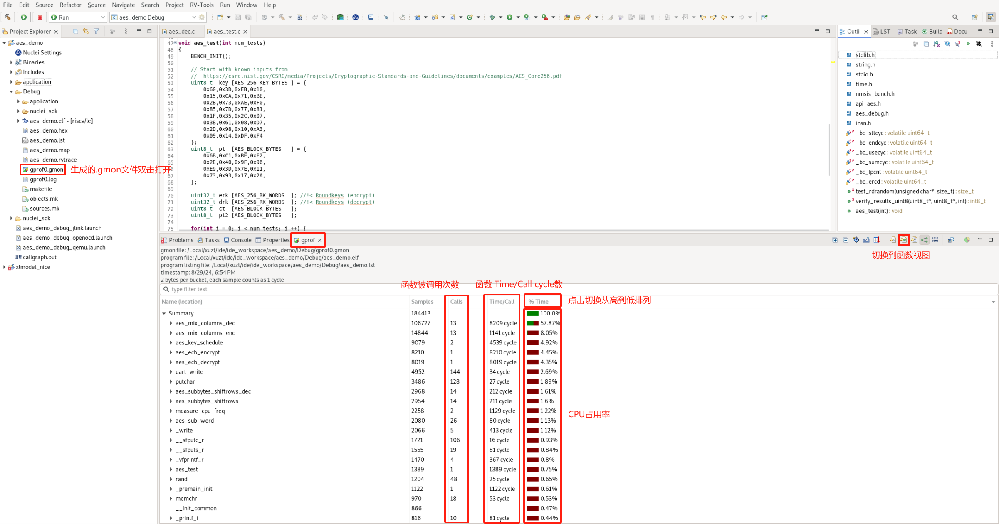
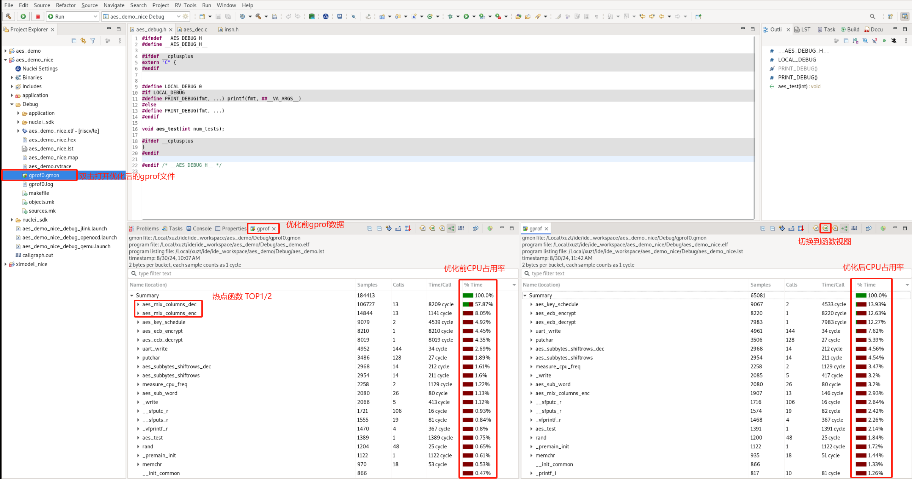

通过Profiling展示Nuclei Model NICE/VNICE指令加速¶
由于 Nuclei Model 仅支持Linux版本，所以此文档的测试都是基于 Nuclei Studio 的 Linux版本 (>= 2024.06) 完成的。
背景描述¶
Nuclei Model Profiling¶
在Nuclei Studio使用Profiling功能进行性能调优举例中已经通过 qemu 以及上板测试两种运行方式展示了 如何在IDE中导入特定程序进行 Profiling，此文档中的一部分将介绍如何针对 Nuclei Model 完成 Profiling。
Nuclei Model Profiling 的优势:
- 无需使用开发板等硬件
- model 中内建了 gprof 功能，无需 Profiling 库和
gcc -pg选项就可以产生 Profiling 文件 - 采取了指令级别的采样，可以进行指令级别的 Profiling 分析
在NucleiStudio_User_Guide.pdf相关章节对 Nuclei Model 如何仿真性能分析配置已经有较详细的描述，此文档以一个例子来展示其实际应用。
NICE/VNICE 自定义指令加速¶
NICE/VNICE使得用户可以结合自己的应用扩展自定义指令，将芯来的标准处理器核扩展成为面向领域专用的处理器，NICE 具体编码规则可以参考 Nuclei_RISC-V_ISA_Spec.pdf 中的 NICE Introduction。NICE 适用于无需使用 RISCV Vector 的自定义指令，VNICE 适用于需要使用 RISCV Vector 的自定义指令。
demo_nice/demo_vnice介绍了 Nuclei 针对 NICE/VNICE 的 demo 应用 是如何编译运行的，此文档将通过改造一个更为常见的 AES 加解密的例子，重点说明该如何使用 NICE/VNICE 指令替换热点函数以及如何在 model 里实现 NICE/VNICE 指令，然后通过 Nuclei Studio 的 Profiling 功能分析替换前后的程序性能。
解决方案¶
环境准备¶
Nuclei Studio：NucleiStudio 2024.06 Linux
Model Profiling¶
工程创建方式有两种：
- 方式1：用户可以使用 Nuclei Studio 中的
demo_nice或demo_vnice模板来移植改造自己的 NICE/VNICE 程序 - 方式2：用户导入自己的工程到 Nuclei Studio 中，然后再添加NICE 内嵌汇编头文件、NICE CSR 使能等代码
此文档将采取前一种方式创建工程，由于此 demo 会用到 VNICE 指令，故创建 demo_vnice 工程，然后将 AES 加解密程序移植替换到其中。
step1：新建 demo_vnice 工程¶
File->New->New Nuclei RISC-V C/C++ Project，选择Nuclei FPGA Evalution Board->sdk-nuclei_sdk @0.6.0
注意： Nuclei SDK 需选择 0.6.0 及以后版本

step2：基于 demo_vnice 工程移植 aes_demo 裸机用例¶
移植 aes_demo 时，需要保留 demo_vnice 中的 insn.h 内嵌汇编头文件框架，方便后续添加自定义的 NICE/VNICE 指令，在 main.c 中需要保留 NICE/VNICE 指令执行前的 CSR 使能代码：
__RV_CSR_SET(CSR_MSTATUS, MSTATUS_XS);
其余 demo_vnice 工程中 application 原始用例可删除，替换成 aes_demo 用例，形成如下目录结构，并确保能够编译通过。

用户可以下载我们移植好的 AES 加解密 demo：优化前AES工程链接下载
下载 zip 包后，可以直接导入到 Nuclei Studio 中运行(导入步骤：File->Import->Existing Projects into Workspace->Next->Select archive file->选择zip压缩包->next即可)
step3：model 仿真程序¶
首先将 aes_debug.h 中的 LOCAL_DEBUG 打开，准备测试 AES 算法的整体 cycle 数。
Nuclei Model 仿真程序需要配置 Nuclei Studio 中的 RVProf 运行配置，打开 Nuclei Studio 主菜单栏的 Run 选项的 Run Configurations 后，先在 Main 选项卡中选择编译好的 elf 文件路径，然后在 RVProf 选项卡
的 Config options 中完成 model 运行配置 --trace=1 --gprof=1 --logdir=Debug，--trace=1 表示开启 rvtrace，--gprof=1 表示开启 gprof 功能生成 *.gmon 文件，--logdir=Debug 则表示最终生成的 *.rvtrace 文件、*.gmon 文件存存放的路径为当前工程下的 Debug 目录，取消勾选 Start RVProf locally，然后点击 Apply 和 Run，model 就开始运行程序了。

在 Console 中会看到 Total elapsed time 说明 model 已经完成仿真了，得到 AES 算法整体消耗 154988 cycle。

将 aes_debug.h 中的 LOCAL_DEBUG 关掉去掉程序打印，为了准确测试 Profiling 数据，确保 Nuclei Studio 的 launch bar 为 aes_demo Debug, 重新 Run model：

step4：解析 gprof 数据¶
model 仿真程序完成后，双击打开生成的 gprof*.gmon 文件，切换到函数视图，点击 % Time从高到低排列函数 CPU 占用率。
注意： Time/Call 显示的是每个函数的函数体 text 段的 cycle 数，并不是整个函数的 cycle 数，是不计入其中子函数占用的 cycle 数的。

从而得到 CPU 占用率最高的 TOP5 热点函数为：
aes_mix_columns_dec
aes_mix_columns_enc
aes_key_schedule
aes_ecb_decrypt
aes_ecb_encrypt
注意： 此时需要备份当前的 aes_demo 工程，改名为 aes_demo_nice 工程，这样可以在 Nuclei Studio 中同时打开两个工程，方便添加 NICE/VNICE 指令优化后的工程和原 aes_demo 工程进行 Profiling 比较。
step5：NICE/VNICE 指令替换¶
用户需要在备份的 aes_demo_nice 工程下，研究热点函数算法特点，将其替换为 NICE/VNICE 指令，从而提升整体程序性能。
在包含 AES 加解密的 TOP5 热点函数的 aes_dec.c 和 aes_dec.c 两个C文件中 #include "insn.h" 以便添加 NICE/VNICE 指令替换。
TOP1 热点函数为 aes_mix_columns_dec，实现了 AES 算法解密的逆混合列，输入一个状态矩阵，经过计算后原地址输出一个计算后的状态矩阵，实现了 Load 数据、逆混合运算以及 Store 数据，代码如下：
static void aes_mix_columns_dec(
uint8_t pt[16] //!< Current block state
){
// Col 0
for(int i = 0; i < 4; i ++) {
uint8_t b0,b1,b2,b3;
uint8_t s0,s1,s2,s3;
s0 = pt[4*i+0];
s1 = pt[4*i+1];
s2 = pt[4*i+2];
s3 = pt[4*i+3];
b0 = XTE(s0) ^ XTB(s1) ^ XTD(s2) ^ XT9(s3);
b1 = XT9(s0) ^ XTE(s1) ^ XTB(s2) ^ XTD(s3);
b2 = XTD(s0) ^ XT9(s1) ^ XTE(s2) ^ XTB(s3);
b3 = XTB(s0) ^ XTD(s1) ^ XT9(s2) ^ XTE(s3);
pt[4*i+0] = b0;
pt[4*i+1] = b1;
pt[4*i+2] = b2;
pt[4*i+3] = b3;
}
}
由于输入输出地址一样，可以考虑用一条 NICE 指令替换，指令的 opcode、funct3 和 funct7 都可以在编码位域中自定义，该指令设置 opcode 为 Custom-0，funct3 设置为0，funct7 设置为0x10，寄存器只使用到 rs1 描述入参地址，不需要使用 rd 和 rs2，指令写到 insn.h 中，内嵌汇编如下：
__STATIC_FORCEINLINE void custom_aes_mix_columns_dec(uint8_t* addr)
{
int zero = 0;
asm volatile(".insn r 0xb, 0, 0x10, x0, %1, x0" : "=r"(zero) : "r"(addr));
}
用户可以在 insn.h 中定义一个 USE_NICE 的宏选择是否使用 NICE ，在 aes_dec.c 改写 aes_mix_columns_dec 如下 ：
static void aes_mix_columns_dec(
uint8_t pt[16] //!< Current block state
){
#ifdef USE_NICE
custom_aes_mix_columns_dec(pt);
#else
// Col 0
for(int i = 0; i < 4; i ++) {
uint8_t b0,b1,b2,b3;
uint8_t s0,s1,s2,s3;
s0 = pt[4*i+0];
s1 = pt[4*i+1];
s2 = pt[4*i+2];
s3 = pt[4*i+3];
b0 = XTE(s0) ^ XTB(s1) ^ XTD(s2) ^ XT9(s3);
b1 = XT9(s0) ^ XTE(s1) ^ XTB(s2) ^ XTD(s3);
b2 = XTD(s0) ^ XT9(s1) ^ XTE(s2) ^ XTB(s3);
b3 = XTB(s0) ^ XTD(s1) ^ XT9(s2) ^ XTE(s3);
pt[4*i+0] = b0;
pt[4*i+1] = b1;
pt[4*i+2] = b2;
pt[4*i+3] = b3;
}
#endif
}
TOP2 热点函数为 aes_mix_columns_enc，和 TOP1 类似，实现的是 AES 加密的逆混合列，同样也是输入一个状态矩阵，经过计算后原地址输出一个计算后的状态矩阵：
static void aes_mix_columns_enc(
uint8_t ct [16] //!< Current block state
){
for(int i = 0; i < 4; i ++) {
uint8_t b0,b1,b2,b3;
uint8_t s0,s1,s2,s3;
s0 = ct[4*i+0];
s1 = ct[4*i+1];
s2 = ct[4*i+2];
s3 = ct[4*i+3];
b0 = XT2(s0) ^ XT3(s1) ^ (s2) ^ (s3);
b1 = (s0) ^ XT2(s1) ^ XT3(s2) ^ (s3);
b2 = (s0) ^ (s1) ^ XT2(s2) ^ XT3(s3);
b3 = XT3(s0) ^ (s1) ^ (s2) ^ XT2(s3);
ct[4*i+0] = b0;
ct[4*i+1] = b1;
ct[4*i+2] = b2;
ct[4*i+3] = b3;
}
}
考虑到指令实现可能无法只用1条指令完成，可使用2条 VNICE 指令替换此算法，第一条 load 16 byte 数据到 Vector 寄存器，第二条再完成计算以及 store。
指令的 opcode、funct3 和 funct7 仍然可以在编码位域中自定义，第一条指令使用 rd 描述 Vector 寄存器，rs1 描述入参地址，第二条指令使用 rs1 描述入参地址，rs1 描述入参 Vector 寄存器，两条 VNICE 指令的内嵌汇编写到 insn.h 中，定义如下：
__STATIC_FORCEINLINE vint8m1_t __custom_vnice_load_v_i8m1 (uint8_t* addr)
{
vint8m1_t rdata ;
asm volatile(".insn r 0xb,4,0,%0,%1,x0"
: "=vr"(rdata)
: "r"(addr)
);
return rdata;
}
__STATIC_FORCEINLINE void __custom_vnice_aes_mix_columns_enc_i8m1 (uint8_t *addr, vint8m1_t data)
{
int zero = 0;
asm volatile(".insn r 0xb,4,1,x0,%1,%2"
: "=r"(zero)
: "r"(addr)
, "vr"(data)
);
}
用户通过定义 Vector 寄存器以及使用上定义好的 VNICE 指令内嵌汇编改写 aes_enc.c 中的 aes_mix_columns_enc 如下：
static void aes_mix_columns_enc(
uint8_t ct [16] //!< Current block state
){
#ifdef USE_NICE
uint32_t blkCnt = 16;
size_t l;
vint8m1_t vin;
for (; (l = __riscv_vsetvl_e8m1(blkCnt)) > 0; blkCnt -= l) {
vin = __custom_vnice_load_v_i8m1(ct);
__custom_vnice_aes_mix_columns_enc_i8m1(ct, vin);
}
#else
for(int i = 0; i < 4; i ++) {
uint8_t b0,b1,b2,b3;
uint8_t s0,s1,s2,s3;
s0 = ct[4*i+0];
s1 = ct[4*i+1];
s2 = ct[4*i+2];
s3 = ct[4*i+3];
b0 = XT2(s0) ^ XT3(s1) ^ (s2) ^ (s3);
b1 = (s0) ^ XT2(s1) ^ XT3(s2) ^ (s3);
b2 = (s0) ^ (s1) ^ XT2(s2) ^ XT3(s3);
b3 = XT3(s0) ^ (s1) ^ (s2) ^ XT2(s3);
ct[4*i+0] = b0;
ct[4*i+1] = b1;
ct[4*i+2] = b2;
ct[4*i+3] = b3;
}
#endif
}
修改后的程序代码编译通过：(aes_demo_nice 工程)

step6：在 Nuclei Model 中实现 NICE/VNICE 指令¶
首先需要下载支持用户配置自定义 NICE/VNICE 指令的原始 Nuclei Model 软件包原始model软件包下载，解压软件包为 xlmodel_nice，然后将其导入 Nuclei Studio。
导入步骤：File->Import->Projects from Folder or Archive->Next->Directory->选择 xlmodel_nice->Finish即可
如何使用 Nuclei Model 以及查看 xlmodel_nice 软件包的目录结构可以参考Nuclei Model介绍，xlmodel_nice 是由CMake构建的，用户无需修改即可编译，在
编译前选择 Nuclei Studio 的 launch bar 的 xlmodel_nice，然后点击编译，确保软件包本身编译通过，编译生成的 elf 文件所在路径为 build/default/xl_cpumodel：

打开 nice.cc 文件，用户需要用该文件的 do_nice 函数实现所有自定义的 NICE/VNICE 指令，当前 do_nice 里包含了针对 demo_nice 或 demo_vnice 的 Nuclei定义的 NICE/VNICE 指令，
用户可以参考其中注释完成自己的自定义指令。
注意： 当用户编写自定义 NICE/VNICE 指令时，需要关掉和 Nuclei demo_nice/demo_vnice 对应的 NUCLEI_NICE_SCALAR/NUCLEI_NICE_VECTOR 宏，以免和用户自定义的指令编码相冲突。

AES demo 中定义的 NICE/VNICE 指令实现如下图，通过指令的 opcode、funct3 和 funct7 编写条件判断语句指定该条指令，然后在其中实现指令行为以及指令 cycle 数添加。
NICE 指令实现中，MMU 宏表示 memory 访问，load memory 使用 MMU.load_uint<n>，store memory 使用 MMU.store_uint<n>，RD、RS1、RS2、RS3 宏表示其对应标量寄存器中的值，FRS1、FRS2、FRS3 宏表示其对应浮点寄存器中的值，这些宏的使用可以参考 nice/inc/decode_macros.h。
VNICE 指令实现中仍然是用 MMU 宏访问 memory，只不过 Vector 寄存器数据会存储在 P.VU.elt 类中，用户可以参考 xlspike/include/riscv/v_ext_macros.h完成相关代码编写。
在指令实现完后，将自定义指令需要的 cycle 数 n 直接标定：STATE.mcycle->bump(n); 即可，这里根据硬件通过 NICE/VNICE 实现此算法的理论值，标定 custom_aes_mix_columns_dec 为 7 cycle，__custom_vnice_load_v_i8m1 为 1 cycle，__custom_vnice_aes_mix_columns_enc_i8m1 为 2 cycle。
以上介绍了用户如何从原始 Nuclei Model 软件包添加自定义 NICE/VNICE 指令，接下来需要将新编译出的 model 可执行程序导入到 Nuclei Studio 中，为了不和 Nuclei Studio 原始 model 名称混淆，可以将 model 导入到 NucleiStudio/toolchain/nucleimodel/bin_aes/ 的创建路径下，我们提供了两种 model 可执行程序获取方式：
- 实现 AES demo NICE/VNICE 指令的 Nuclei model 软件包添加AES NICE指令model软件包，编译后将
xl_cpumodel可执行程序导入上述路径。 - 编译好的 model 的可执行程序 xl_cpumodel，直接导入上述路径。
step7：热点函数再分析¶
注意： 请务必完成 step6 中介绍的实现了 NICE/VNICE 指令的 model 导入 Nuclei Studio 中才能用 model Run aes_demo_nice 工程。
首先打开 Nuclei Studio 主菜单栏的 Run 选项的 Run Configurations，model 配置需要重新添加一份 Nuclei Studio 中的 RVProf 运行配置 aes_demo_nice Debug：

将 Main 选项卡的 Project 通过 Browse 改为 aes_demo_nice，C/C++ Application 通过 Search Project 改为 aes_demo_nice.elf:
然后将 RVProf 选项卡中的 model 执行路径 Executable path 改为 step6 中新修改 model 的执行路径： .../NucleiStudio/toolchain/nucleimodel/bin_aes/xl_cpumodel:

运行前将 aes_debug.h 中的 LOCAL_DEBUG 打开，测试优化后 AES 算法的整体 cycle 数，选择 Nuclei Studio 的 launch bar 的 aes_demo_nice Debug后 Run model，得到 AES 算法优化后整体消耗 cycle 数从优化前的 154988 降到了 35619 cycle。

将 aes_debug.h 中的 LOCAL_DEBUG 关掉测试重新 Run model 测试 Profiling 数据，双击 gprof0.gmon 可以看到 CPU 占用率较高的热点函数已经没有 aes_mix_columns_enc 和 aes_mix_columns_dec 了：

搜索 aes_mix_columns_enc 和 aes_mix_columns_dec ，CPU 占用率 aes_mix_columns_enc 从 8.05% 降到了 2.93%，aes_mix_columns_dec 从 57.87% 降到了 0.5%，函数 Time per Call 消耗 cycle 数 aes_mix_columns_enc 从 1141 cycle 降到了 146 cycle，aes_mix_columns_dec 从 8209 cycle 降到了 25 cycle，说明了通过 NICE/VNICE 指令替换热点函数可以大幅提高程序算法性能。

数据统计如下：(enc: aes_mix_columns_enc, dec: aes_mix_columns_dec)
| Function | Before Optimization | NICE/VNICE Optimization |
|---|---|---|
CPU Usage % (enc) |
8.05 | 2.93 |
CPU Usage % (dec) |
57.87 | 0.5 |
Time per Call Cycles (enc) |
1,141 | 146 |
Time per Call Cycles (dec) |
8,209 | 25 |
| AES Program Total | Before Optimization | NICE/VNICE Optimization |
|---|---|---|
| Cycles | 154,988 | 35,619 |
AES加解密 NICE/VNICE demo：优化后AES工程链接下载